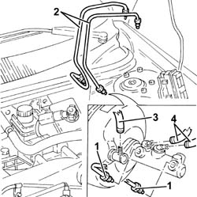
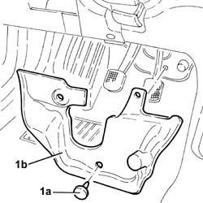
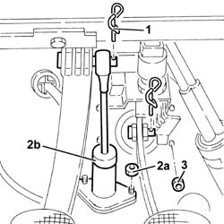
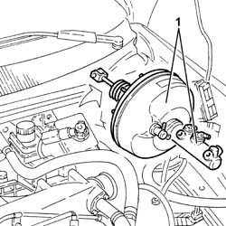

3330D10 brake servo - r+r - includes separation from master cylinder (pump)
- Path
- Procedures > 33 BRAKING SYSTEM > 3330 HYDRAULIC BRAKING SYSTEM > 3330D brake vacuum system > 3330D10 brake servo - r+r - includes separation from master cylinder (pump)
- Kind
- repair procedure (removal / refitting; the operation number is the code)
- Applies to
- all engines; all production periods
- Interactive page
- https://sloeber94.github.io/elrnDB-a156/en/#/3238077
Applies to: all engines; all production periods
 Removing
Removing
 Refitting
Refitting7045A10 l/h or r/h front seat (one) - r+r
3340A12 A'B.S. system. - electronic and hydraulic CONTROL UNIT R.R.
5530B52 Battery DRIP TRAY/SUPPORT - R.R.
3340A13 abs central mount - r r
1. Disconnect the connectors on the pipes from pump to hydraulic and electronic control unit, pump side.
2. Remove the pipes from the pump to the hydraulic and electronic control unit.
3. Disconnect the vacuum pipe from the brake servo unit.
4. Disconnect the pipes from the brake-clutch fluid reservoir to the pump, pump side.

Applies to: all engines; all production periods
1. Working from the passenger compartment, remove the plastic buttons (1a) and remove the pedal unit guard (1b).

Applies to: all engines; all production periods
1. Remove the retainer and disconnect the clutch pump from the pedal.
2. Undo the nuts (2a) and push back the clutch pump (2b).
3. Undo the nuts securing the brake servo to the pedal assembly mounting.

Applies to: all engines; all production periods
1. Working from the engine compartment, remove the brake servo-pump unit.

Applies to: all engines; all production periods
Refitting
RemovingWorking from the engine compartment, fit the brake servo-pump unit.
Working from the interior compartment, tighten the nuts fixing the brake servo to the pedal unit to torque.
 | Fastening | Component | Ø | Value (daNm) |
|---|---|---|---|---|
- | Bolt | BRAKE SERVO VACUUM PUMP | M6 | 2.1 - 2.6 |
Refit the clutch pump in its seating and tighten the nuts to the recommended torque.
Connect the clutch pump to the pedal and secure it with its retainer.
Fit the pedal unit guard and secure it with its plastic buttons.
Connect the pipes from the brake-clutch fluid reservoir to the pump, pump side.
Connect the vacuum pipe to the brake servo.
Refit in their seatings the pipes from the pump to the hydraulic and electronic unit, and connect them to the pump, tightening the connectors to torque.
| Fastening | Component | Ø | Value (daNm) |
|---|---|---|---|---|
- | Nut | BRAKE SERVO | M8 | 1.2 - 1.5 |
3340A13 abs central mount - r r
3330A14 HYDRAULIC BRAKING SYSTEM - Bleed air
5530B52 Battery DRIP TRAY/SUPPORT - R.R.
3340A12 A'B.S. system. - electronic and hydraulic CONTROL UNIT R.R.
Topics linked from this page (6)
- 3330A14 HYDRAULIC BRAKING SYSTEM - Bleed air
- 3340A12 A'B.S. system. - electronic and hydraulic CONTROL UNIT R.R.
- 3340A13 abs central mount - r r
- 5530B10 battery - r+r
- 5530B52 Battery DRIP TRAY/SUPPORT - R.R.
- 7045A10 l/h or r/h front seat (one) - r+r